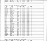
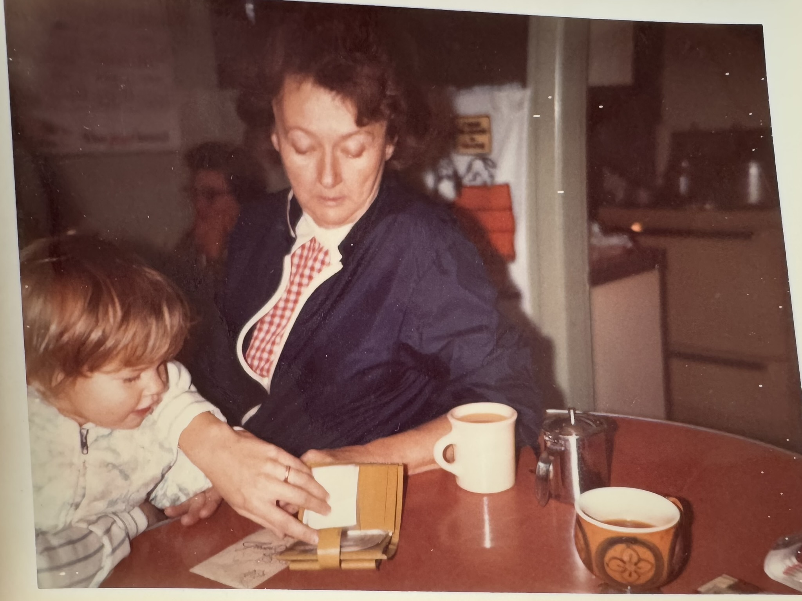
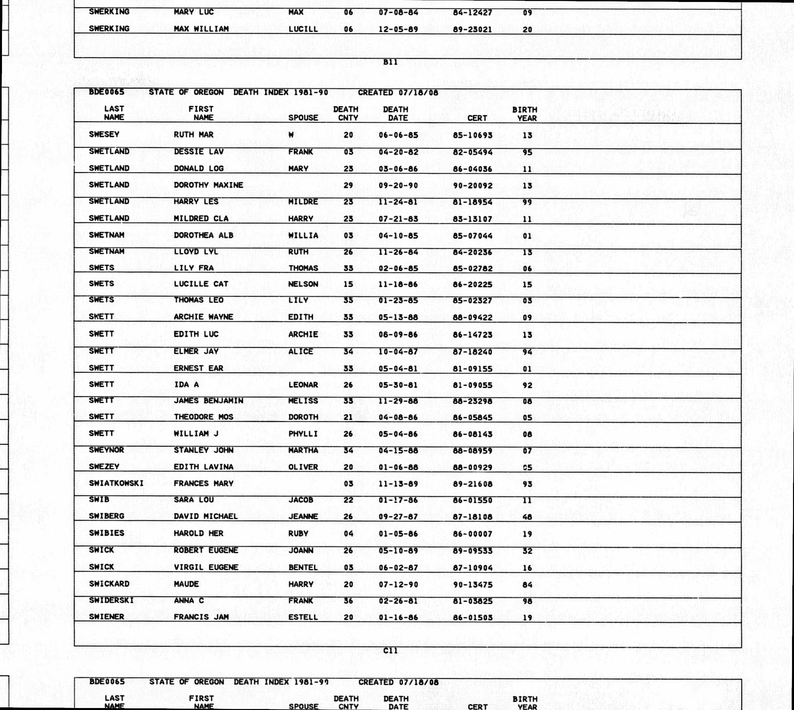

Pratt, Dorothy Maxine
| Married Name | Pratt, Dorothy Maxine |
| Gender | female |
| Age at Death | 76 years, 11 months, 8 days |
Events
| Event | Date | Place | Description | Sources |
|---|---|---|---|---|
| Birth | 10/12/1913 | Fremont, Dodge, Nebraska, USA | 1a 2a | |
|
|
||||
| Death | 9/20/1990 | Tillamook, Tillamook, Oregon, USA | 3a | |
|
|
||||
Parents
| Relation to main person | Name | Birth date | Death date | Relation within this family (if not by birth) |
|---|---|---|---|---|
| Father | Pratt, Charles Edward | 5/29/1884 | before 3/7/1955 | |
| Mother | Stalgren, Anna | 1895 | ||
| Pratt, Dorothy Maxine | 10/12/1913 | 9/20/1990 | ||
| Brother | Pratt, Clayton | |||
| Brother | Pratt, Donald | |||
| Sister | Pratt, Bonnie |
Families
Family of Swetland, Gordon Samuel and Pratt, Dorothy Maxine |
|||||||||||||||||||||||
| Married | Husband | Swetland, Gordon Samuel ( * 11/15/1912 + 10/26/2003 ) | |||||||||||||||||||||
|
|||||||||||||||||||||||
| Children | |||||||||||||||||||||||
| Name | Birth Date | Death Date |
|---|---|---|
| Swetland, Gordon Lee | 8/5/1936 | 5/12/2022 |
| Swetland, William “Billy” Joe |
Media








Family Map
Pedigree
Ancestors
Source References
-
Iowa, U.S., Marriage Records
-
- Page: Iowa Department of Public Health; Des Moines, Iowa; Iowa Marriage Records, 1923–1937; Record Type: Marriage Volume: 3
-
Citation:
Iowa Department of Public Health; Des Moines, Iowa; Iowa Marriage Records, 1923–1937; Record Type: Marriage
Description
Volume: 3Source Information
Ancestry.com. Iowa, U.S., Marriage Records, 1880-1948 [database on-line]. Lehi, UT, USA: Ancestry.com Operations, Inc., 2014.
Original data:Iowa Department of Public Health. Iowa Marriage Records, 1880–1948. Textual Records. State Historical Society of Iowa, Des Moines, Iowa. Iowa Department of Public Health. Iowa Marriage Records, 1923–37. Microfilm. Record Group 048. State Historical Society of Iowa, Des Moines, Iowa.
-
-
Nebraska, U.S., Birth Ledgers
-
- Page: Nebraska Department of Health and Human Services; Lincoln, Nebraska; Nebraska Birth Index, 1912-1994
-
Citation:
Nebraska Department of Health and Human Services; Lincoln, Nebraska; Nebraska Birth Index, 1912-1994
Source Information
Ancestry.com. Nebraska, U.S., Birth Ledgers, 1904-1911, Birth Index, 1912-1994 [database on-line]. Lehi, UT, USA: Ancestry.com Operations, Inc., 2021.Original data: Nebraska Department of Health and Human Services.
Birth Ledgers, 1904-1911. Nebraska Department of Health and Human Services. Lincoln, Nebraska.
Birth Index, 1912-1994. Nebraska State Library and Archives Commission, Lincoln, Nebraska.
-
-
Oregon, U.S., Death Index
-
- Page: Oregon State Library; 1966-1970 Death Index; Reel Title: State of Oregon Death Index; Year Range: 1981-1990
-
Citation:
Oregon State Library; 1966-1970 Death Index; Reel Title: State of Oregon Death Index; Year Range: 1981-1990
Source Information
Ancestry.com. Oregon, U.S., Death Index, 1898-2008 [database on-line]. Provo, UT, USA: Ancestry.com Operations Inc, 2000.Original data: State of Oregon. Oregon Death Index, 1903-1998. Salem, OR, USA: Oregon State Archives and Records Center.
Oregon Death Indexes, 1903-1970. Salem, OR, USA: Oregon State Library.
Oregon Death Indexes, 1971-2008. Salem, OR, USA: Oregon State Library.
-
-
U.S., Evangelical Lutheran Church in America Church Records
-
- Page: Evangelical Lutheran Church in America Archives; Elk Grove Village, Illinois; Congregational Records
-
Citation:
Evangelical Lutheran Church in America Archives; Elk Grove Village, Illinois; Congregational Records
Description
Church Name or Description: Trinity Lutheran ChurchSource Information
Ancestry.com. U.S., Evangelical Lutheran Church in America Church Records, 1781-1969 [database on-line]. Lehi, UT, USA: Ancestry.com Operations, Inc., 2015.
Original data:Evangelical Lutheran Church in America. ELCA, Birth, Marriage, Deaths. Evangelical Lutheran Church of America, Chicago, Illinois.
-
-
US, WWII Draft Registration Cards
-
- Page: National Archives at St. Louis; St. Louis, Missouri; Wwii Draft Registration Cards For Nebraska, 10/16/1940-03/31/1947; Record Group: Records of the Selective Service System, 147; Box: 105 Name Range: Sward, Carl-Tenopin, Robert
-
Citation:
National Archives at St. Louis; St. Louis, Missouri; Wwii Draft Registration Cards For Nebraska, 10/16/1940-03/31/1947; Record Group: Records of the Selective Service System, 147; Box: 105
Description
Name Range: Sward, Carl-Tenopin, RobertSource Information
Ancestry.com. U.S., World War II Draft Cards Young Men, 1940-1947 [database on-line]. Lehi, UT, USA: Ancestry.com Operations, Inc., 2011.
-